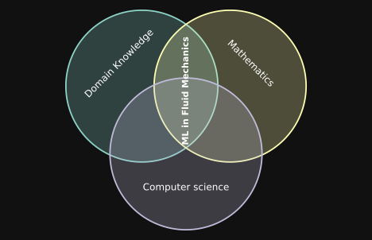
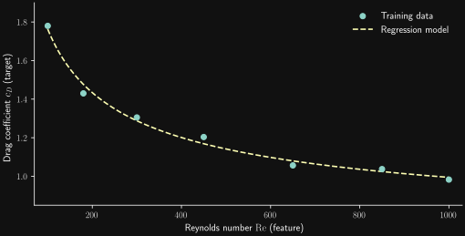
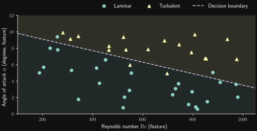
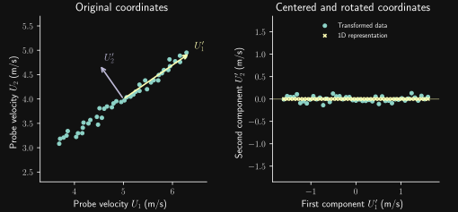
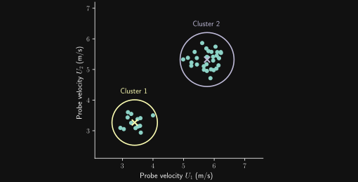
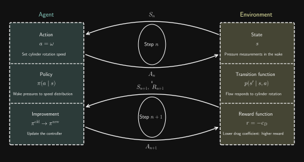
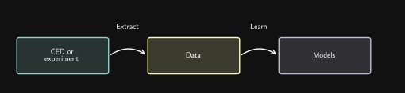
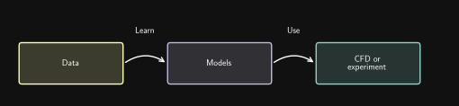
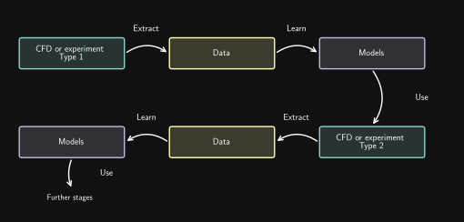
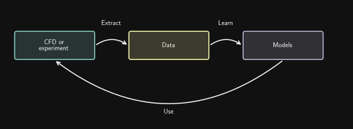

Machine Learning
in Fluid Mechanics
Lecture 1 — Course overview and motivation
Andre Weiner
Chair of Fluid Mechanics
Learning with generative AI
- Use AI to build your own understanding and close the gaps
- Following and understanding the solution is not the same as being able to solve the problem yourself
- Some struggle is essential; you do not need to stay stuck indefinitely
Learning takes time and practice
- Attempt → ask → examine → practise independently → revisit
- Return repeatedly after longer breaks and recall the reasoning without assistance
- Generate extra exercises when you need more practice
Useful prompts
- “Give me one hint, then wait for my attempt.”
- “Identify the first mistake without completing the solution.”
- “Quiz me one question at a time and ask me to justify my answer.”
Learning with a coding agent
- Work in small, understandable steps
- Review the code and predict its behavior before running it
- Practise the core reasoning and implementation yourself
Build your own evidence of correctness
- No reference solutions will be provided in this course
- Check units, signs, boundaries, simple cases, and independent approaches
- Explain what your checks support and what remains uncertain
read lecture 0
Why do ML and fluid mechanics complement each other?
What data are relevant in fluid mechanics?
What is required to combine ML and fluid mechanics?

Types of problems that ML solves
Supervised learning
Regression

Classification

Unsupervised learning
Dimensionality reduction

Clustering

Reinforcement learning

Combining learning categories
Challenges encountered in machine learning
How to combine ML and fluid mechanics
Extract data and learn models

Learn models and use them in CFD or experiments

Combine workflows across scales or levels of complexity

Close the loop

Review — Lecture 1
Why do fluid mechanics and machine learning complement each other?
Experiments and simulations generate complex flow data, while fluid-mechanical models also need reference data for calibration. Machine learning helps identify patterns, create compact representations, and learn predictive relationships from those data.
What is a flow snapshot, and why can a time-resolved dataset be much larger than one snapshot?
A snapshot records selected flow quantities at a particular time instance. A time-resolved dataset contains many snapshots. Storage also depends on spatial resolution, the number of stored fields, numerical precision, and file format.
Name the three broad types of fluid-mechanical data discussed in the lecture and give an example of each.
Snapshots contain field values such as velocity or pressure. Derived quantities include averages, force coefficients, pressure losses, and vorticity. Secondary data include solver residuals, logs, and numerical settings.
Which three disciplines support the combination of machine learning and fluid mechanics? Give one contribution from each.
Domain knowledge contributes physical relationships and knowledge of numerical or measurement techniques. Mathematics contributes linear algebra, probability theory, and optimization. Computer science contributes efficient algorithms, parallel computing, and data processing.
How do a feature, a target or label, and an individual sample differ in supervised learning?
A feature is an input property or variable. Each sample contains specific values of the features and an associated target value. The target or label is the quantity or category the model should predict; it can be continuous or discrete.
Which learning task predicts the force on a bluff body from its Reynolds number, and what are its inputs and outputs?
This is regression because the predicted force is continuous. Reynolds number is the input feature, and the measured or simulated force is the target. The other relevant conditions, such as geometry and reference properties, must be fixed or supplied as additional features.
How does classification differ from regression? What does a point on the wrong side of a classification boundary represent?
Classification predicts a category or discrete output, whereas regression predicts continuous quantities. A labelled point on the wrong side of the boundary is misclassified by that model. A learned boundary need not separate all measured samples perfectly.
Does an accurate predictive model necessarily reveal an understandable physical mechanism?
No. A model may learn a representation that predicts well but is difficult to interpret. We must examine what its patterns represent and whether they help answer the physical question. Predictive accuracy and physical understanding are different criteria.
In the two-velocity-probe example, does rotating the coordinate system already reduce the dimensionality?
No. Centering and rotating the data into the principal-component coordinates preserve both describing coordinates. Dimensionality reduction occurs when we discard the second coordinate and retain only the first.
When might discarding a component with small variance help, and when might it be harmful?
If the component mainly represents measurement noise, discarding it can improve data quality. However, small variance alone does not make it irrelevant: a weak fluctuation may contain physically important information or a signal needed by a later task.
What distinguishes clustering from classification?
Clustering groups samples by similarity without predefined class labels. Classification learns to predict categories from labelled examples. In clustering, the representation, scaling, and similarity measure influence the groups that are found.
Do clusters of velocity-probe readings automatically identify distinct physical flow regimes?
No. Clusters describe similarity in the chosen representation. Inspect the associated flow fields to establish their physical meaning; a few probes may miss differences elsewhere in the domain.
In the rotating-cylinder example, what are the state and the action?
The state is the vector of pressure measurements from a few locations in the wake. The action is the cylinder rotation speed. This lecture uses the term state for the measurements without distinguishing state from observation.
What is the policy in the rotating-cylinder example?
The policy is the control law. It maps the wake-pressure values to a probability distribution over rotation speeds, from which the agent selects an action.
Why does the reward r = −cD encourage drag reduction? Is reinforcement learning concerned only with the next reward?
A smaller drag coefficient gives a larger value of −cD. The learning objective is to maximize expected cumulative reward over successive interactions, rather than only the next reward. Practical objectives may also account for actuation cost and allowable rotation speeds.
What do uppercase Sₙ, Aₙ, and Rₙ₊₁ mean, and how do they differ from lowercase sₙ, aₙ, and rₙ₊₁?
Uppercase letters denote random variables: state, action, and reward. Lowercase letters denote their realized values. The reward Rₙ₊₁ follows the action Aₙ, as the environment transitions to the next state Sₙ₊₁.
Give two examples of combining learning categories. Must every step use machine learning?
Image-based anomaly detection can combine dimensionality reduction with classification. A reduced-order flow model can combine dimensionality reduction with regression in latent coordinates. Not every step needs machine learning: analytical models and classical numerical methods can be part of the workflow.
Why can testing on nearby flow snapshots give an overly optimistic picture of generalization?
Nearby snapshots can be strongly correlated with training samples and may add little independent information. Test on suitably separated trajectories, runs, or operating conditions relevant to the intended application. Keep test data separate from model fitting and model selection.
Why is a small average prediction error insufficient to establish a reliable fluid-mechanical model?
It can conceal local failures, physical inconsistencies, or poor predictions outside the training conditions. Check conservation laws, boundary conditions, simple and limiting cases, and independent data or methods. For dynamical models and controllers, also test the resulting trajectories or closed-loop behaviour.
Describe the four extract–learn–use workflows discussed in the lecture.
In analysis, CFD or experiments provide data from which we learn models. In model integration, we learn a model from available data and use it in CFD or an experiment. Across scales or complexity levels, one investigation supplies a model for another. In a feedback loop, a learned model is used in the same system, changing its behaviour and generating new data. Examples include surrogate modeling, learned inlet conditions, multiphase closure models, and active flow control.